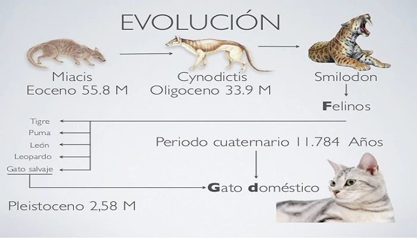
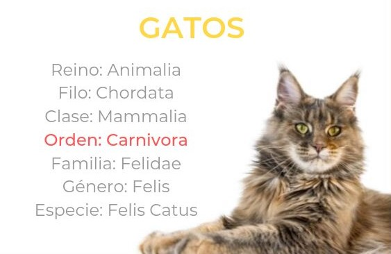
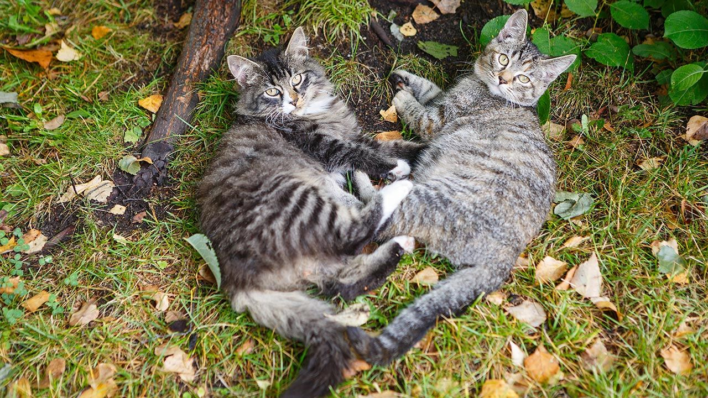
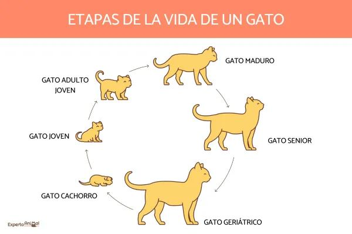

Índice
Esta es nuestra historia !!
Nuestro Origen y Evolución
Hace miles de años, en las vastas tierras salvajes, los antepasados de los gatos como yo merodeaban con elegancia. Nuestra historia se remonta a los felinos salvajes que cazaban pequeñas presas para sobrevivir. Los humanos comenzaron a darse cuenta de nuestra habilidad para controlar plagas, como roedores, en sus aldeas y graneros, lo que marcó el comienzo de una relación peculiar.
Alrededor del antiguo Egipto, donde fui venerado como un ser divino, los humanos comenzaron a apreciar no solo mis habilidades cazadoras, sino también mi compañía y carácter misterioso. Eso nos llevó a ser domesticados y a convivir con los humanos en una relación mutuamente beneficiosa. A lo largo de los siglos, pasé de ser un cazador solitario a un compañero y a veces un confidente de los humanos.
La selección natural y la convivencia con humanos influyeron en mi evolución. A lo largo de los años, mis rasgos físicos se adaptaron para acomodar la vida en hogares y granjas. Mi tamaño, color y pelaje variaron según las regiones y los cruces, lo que dio lugar a diferentes razas de gatos.
En la actualidad, soy una de las mascotas más populares en todo el mundo. Mi agilidad, encanto y misterio continúan cautivando a las personas. Aunque he perdido parte de mi naturaleza salvaje, aún mantengo mis instintos naturales de caza y comportamiento felino. Sin embargo, no puedo negar que disfruto de las comodidades y el afecto que los humanos me brindan.
En resumen, mi historia es una mezcla de independencia salvaje y convivencia doméstica. Desde ser un cazador orgulloso hasta ser acariciado y mimado en el regazo de los humanos, he evolucionado a lo largo del tiempo, pero siempre he mantenido mi esencia felina. ¡Miau-ravilloso, ¿verdad?
Taxonomía
¡Miau-miau! Ahora, te mostraré la taxonomía de los gatos desde mi punto de vista felino:
- Reino: Animalia
- Subreino: Eumetazoa
- Subfilo: Vertebrata
- Clase: Mammalia
- Subclase: Theria
- Infraclase: Placentalia
- Orden: Carnivora
- Suborden: Felifornia
- Familia: Felidae
- Subfamilia: Felinae
- Género: Felis
- Especie: Felis silvestris
- Subespecie: Felis silvesstris catus
Así que, desde el más alto "miau-garquía" hasta la especie a la que pertenezco, esta es la taxonomía que describe mi lugar en el mundo animal. ¡Miau-ravilloso tener una forma elegante de describirlo!
Reproducción
Cuando llega la temporada de apareamiento, los olores en el aire cambian y se siente una especie de cosquilleo en el instinto. Los gatos machos, también conocidos como "tomcats", pueden volverse más territoriales y vocalizar más para atraer la atención de las gatas en celo.
Las gatas entramos en celo, lo que significa que estamos listas para reproducirnos. Durante este tiempo, podemos ser bastante expresivas, ronroneando más fuerte de lo habitual y mostrando comportamientos inusuales, como restregarnos contra objetos y movernos de manera coqueta.
Los machos pueden detectar estos signos y se acercarán con cautela. Los encuentros pueden ser un poco ruidosos y juguetones, pero en última instancia, el macho realiza la monta. Los gatos no suelen formar parejas duraderas; una vez que el acto de apareamiento ha tenido lugar, cada uno sigue su camino.
Luego, viene la espera. Nosotras, las gatas, pasamos por un período de gestación que dura alrededor de dos meses, o aproximadamente 63 días. Durante este tiempo, nos aseguramos de encontrar un lugar tranquilo y seguro para dar a luz a nuestros gatitos.
El nacimiento de los gatitos, o "gatitos", es un momento emocionante y a veces agotador. Normalmente, damos a luz a camadas de varios gatitos, que pueden variar en número. A veces, las gatas buscan lugares oscuros y protegidos para parir, y después pasamos tiempo cuidando y amamantando a nuestros pequeños.
A medida que los gatitos crecen, observamos con orgullo cómo exploran su entorno y desarrollan sus propias personalidades felinas. Aunque soy un gato, no tengo la experiencia personal de ser madre, pero he observado cómo nuestras gatas amamantan, acicalan y protegen a sus crías con una dedicación asombrosa.
En resumen, el proceso de reproducción para nosotros, los gatos, es una mezcla de instinto, comportamientos naturales y momentos especiales que dan lugar a la llegada de nuevas generaciones de gatitos. ¡Miau-mágico, ¿verdad?
Esperanza de Vida
La vida de un gato, como yo, está llena de aventuras y momentos especiales. En general, nuestra esperanza de vida puede variar según varios factores, como la genética, el entorno en el que vivimos y cómo somos cuidados por los humanos.
En promedio, diría que muchos de nosotros vivimos alrededor de 12 a 16 años. Sin embargo, algunos gatos pueden superar esa edad y vivir hasta los 20 años o incluso más, especialmente si reciben atención médica regular, una dieta equilibrada y un ambiente seguro y estimulante.
Nuestra vida está llena de etapas. De cachorros curiosos y juguetones, pasamos a ser jóvenes adultos llenos de energía y exploración. Con el tiempo, nos volvemos más relajados y disfrutamos de largos momentos de descanso al sol. A medida que envejecemos, podemos enfrentar algunos desafíos de salud, pero con el cuidado adecuado y el amor de nuestros humanos, seguimos siendo valiosos miembros de la familia.
Cada año de vida para un gato es como una aventura en sí mismo, lleno de descubrimientos, caricias y momentos de complicidad con nuestros compañeros humanos. Aunque nuestras vidas son más cortas en comparación con las de los humanos, dejamos una huella indeleble en el corazón de quienes nos cuidan y nos aman.
Así que, en resumen, nuestra esperanza de vida puede ser variada, pero sin importar cuántos años vivamos, siempre dejamos una marca especial en la vida de quienes nos rodean. ¡Miau-vivimos cada día con entusiasmo y afecto!
